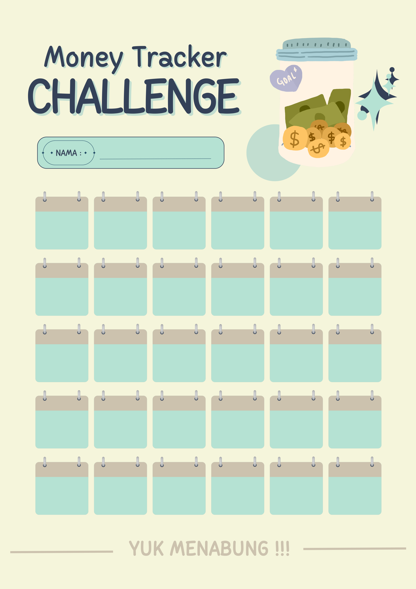

Daftar Program Kerja Subunit Sumberadi
Edukasi Kesehatan dan Gizi Seimbang
Edukasi Pentingnya Menjaga Kebersihan Lingkungan
Infografis Desa Bonjeruk
Infografis Komoditas Desa Bonjeruk
Kampanye Hemat Energi
Meningkatkan Minat Belajar Siswa Melalui Pengajaran dan Pengadaan Buku Materi Tambahan (Booklet) Matematika untuk Anak-anak di Dukuh Jodag
Panduan Keselamatan di Tempat Kerja
Pemanfaatan Limbah Pertanian (Jerami Padi) menjadi Pakan Ternak dengan Metode Amoniasi
Pembuatan Buklet tentang Pemanfaatan Teknologi Saklar Otomatis untuk Mencapai Sistem Pencahayaan Hemat Energi
Pembuatan Drawing MEP (Mechanical, Electrical, Plumbing) untuk Rancangan Instalasi Perpustakaan Kecamatan Jonggat
Pembuatan Mineral Block untuk Meningkatkan Produktivitas Sapi Potong
Pembuatan Pupuk Organik Cair atau POC dengan Memanfaatkan Sampah Dapur Rumah Tangga
Pengenalan Teknologi Pertanian Melalui Aplikasi Desa Apps
Pengolahan dan Pengenalan Produk Pangan Hewani
Penyuluhan dan Pembuatan Booklet Informasi Mengenai Kebiasan Kecil dan Sederhana yang Mengubah Hidup menjadi Lebih Sehat
Penyuluhan dan Pembuatan Booklet Mengenai Pendaftaran Perizinan UMKM di Jodag
Penyuluhan tentang Obat dan Bahan Aditif Booklet
Peta Wisata Desa Bonjeruk
Pola Hidup Bersih & Sehat Dengan Pemberantasan Jentik Nyamuk
Poster Cuci Tangan dengan Sabun secara benar pada Area Fasilitas Umum di Dukuh Jodag
Poster Money Tracker Challenge
Poster Saving Challenge
Praktik Penanaman Pohon Buah di Sekitar Pekarangan Rumah
Praktik Penanaman Tanaman Herbal Sebagai Obat
Redesain Pusat Kuliner Bonjeruk
Sosialisasi dan pembuatan booklet mengenai pentingnya menabung sejak dini beserta pembuatan tabungan
Poster Money Tracker Challenge
Oleh Levina Larassati Apriliana & Wikan Cahyaning Purbandari
20/457081/SV/17528 || 20/462304/PA/20276
Memberikan edukasi kepada siswa-siswi SD N Sumberadi kelas 3, 4, dan 5 mengenai pentingnya menabung sejak dini dengan pemberian booklet, sosialisasi di kelas dan pembagian poster money tracker untuk setiap siswa agar termotivasi untuk menabung.